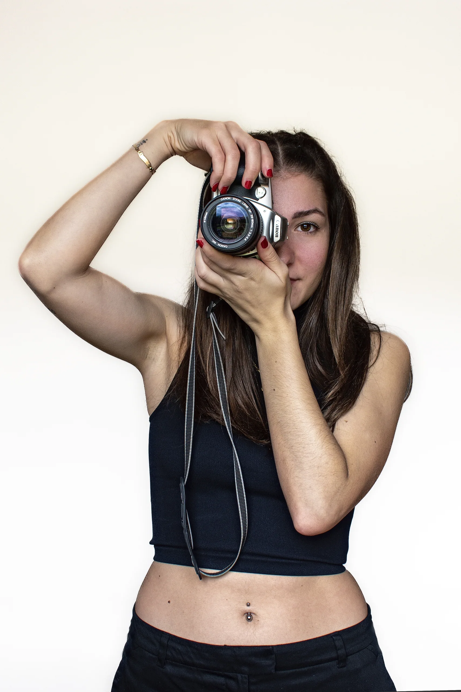

Mi gran pasión es capturar momentos, emociones y detalles que muchas veces pasan de manera desapercibida a simple vista. Aunque estoy dando mis primeros pasos en el mundo de la fotografía, cada imagen que tomo es un reflejo de mi creatividad y del trabajo que llevo a mis espaldas de años en esta maravillosa industria.
Desde pequeña, siempre he sentido una conexión especial con la fotografía. Me fascina cómo una imagen puede contar una historia, evocar sentimientos y preservar recuerdos para siempre. En mis proyectos, me gusta explorar diferentes estilos y técnicas donde en cada sesión es una nueva oportunidad para aprender y experimentar.
Me encanta experimentar con la luz, los colores y las perspectivas para contar historias únicas. Ya sea un retrato espontáneo, un paisaje que roba el aliento o la magia de un instante irrepetible, mi objetivo es transformar cada fotografía en un recuerdo que perdure. Estoy en constante aprendizaje, buscando nuevas formas de mejorar y crecer en este camino. Si te gustaría trabajar conmigo o simplemente conocer más sobre mi trabajo, estaré encantada de conectar contigo!